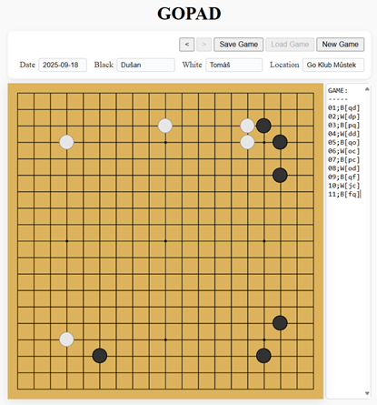

GoPad
Webová aplikace pro zaznamenávání vašich partií hry Go. Určeno primárně pro tablet.

Aplikaci otevřete na svém tabletu, který pak položíte na stůl vedle své desky goban. Během hry zaznamenáváte jednotlivé tahy. Po skončení partie si můžete vyexportovat soubor ve formátu SGF, který lze otevřít na všech platformách, jako je OGS, nebo KataGo. Hru si tak můžete kdykoliv zpětně zanalyzovat.
Aplikace využívá technologii local storage, takže se nemusíte bát, že o hru přijdete, pokud se Vám omylem podaří zavřít okno prohlížeče, nebo se Vám restartuje tablet.
Odkazy: